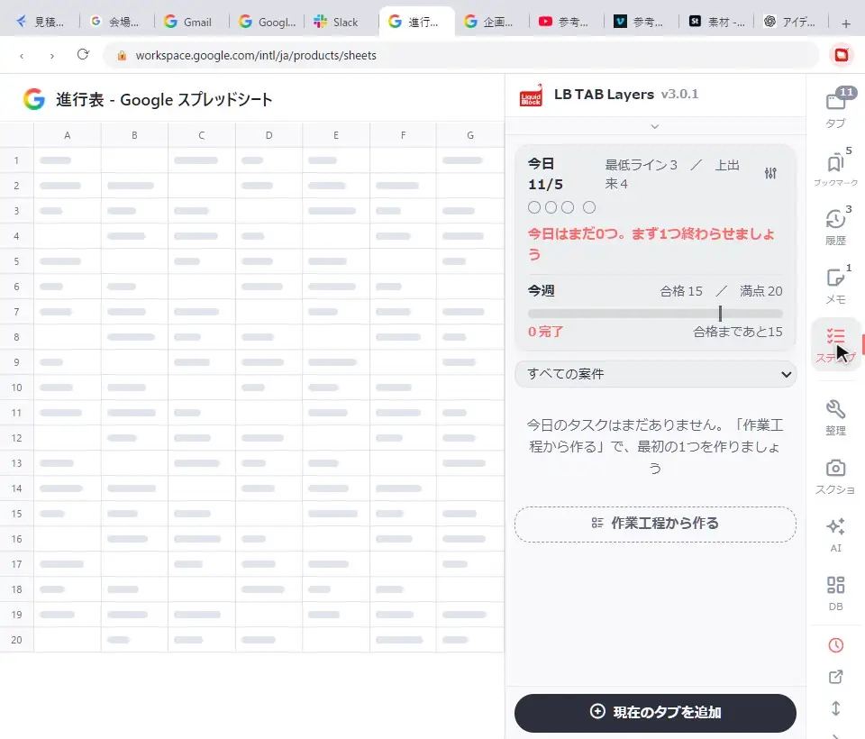

目の前の仕事に集中できないのは、「考えること」と「手を動かすこと」が混ざっているからです。「つくる」には、目的を決める「創」、そのためのタスクを割り出す「造」、手を動かす「作」の3つがあります。先に「創」と「造」を済ませ、1時間で終わるステップに分けてから「作」に入ると、量と速さが見えて没頭できます。
パソコンに向かっているのに、手が進まない。資料を開いては閉じ、メールを見て、また資料に戻る。気づけば1時間たっているのに、何も終わっていない。「自分は集中力がない」と落ち込む前に、仕事の分け方を見直してみてください。
この記事では、仕事を「3つのつくる」に分けて、集中できる大きさまで細分化する方法を紹介します。
答え：「つくる」を3つに分けると、手が止まらない
日本語の「つくる」には、じつは3つの意味があります。
| 漢字 | 意味 | 仕事でいうと |
|---|---|---|
| 創 | 目的を生み出す | 何のために、何をつくるのかを決める |
| 造 | 構造を組み立てる | 目的のために必要なタスクを割り出し、順番を決める |
| 作 | 手を動かす | 割り出したタスクを、1つずつ実際にこなす |
集中できないときは、たいてい「作」の最中に「創」や「造」を考えています。書きながら「そもそも何のための資料だっけ」と迷い、手を止めて「次は何をやるんだっけ」と考える。考えることと手を動かすことが交互に来るので、頭が切り替わり続けて疲れます。
だから順番を決めます。創 → 造 → 作。考える仕事を先に終わらせてから、手を動かす仕事に入ります。
集中できない・先延ばししてしまう本当の理由
タスクが大きすぎて、終わりが見えない
「提案資料をつくる」「新しいサイトをつくる」。この大きさのままだと、どこから手を付ければいいかわかりません。終わりが見えない仕事は、後回しにしたくなります。
「つくる」という言葉が、3つを隠している
「資料をつくる」と書いた瞬間、目的を決めることも、構成を考えることも、文章を書くことも、全部が1つの言葉に入ってしまいます。見分けられないので、どこで止まっているのかもわかりません。
量と速さがわからない
どれだけやれば終わるのか、自分がどれくらいの速さで進めるのか。これが見えないと、「まだ全然終わらない」という気持ちだけが残ります。
【実体験】「つくる」という言葉のせいで、見分けられていない
私たちは映像制作の会社です。映像の仕事は、企画、プリプロダクション（撮影前の準備）、コンテ、CG、編集、納品と、工程がとても多い仕事です。その中で、私たちは「3つのつくる」を意識するようになりました。
- 目的が「創」
- そのためのタスクの割り出しが「造」
- 手を動かすのが「作」
一緒に働く人を見ていて感じるのは、「つくる」という言葉のせいで、この3つを見分けられていない人が多いということです。
すごい人は、一気に作っているように見えます。でも実際は、構造を分解して考え、作業に充て、一つずつクリアしています。反対に、考えることと進むことを分けずに取りかかって、うまくいかずに落胆し、自分の可能性を閉ざしてしまう人を、たくさん見てきました。
私たちが大事にしているのは、1時間で済むステップに分けることです。そこまで分けて初めて、仕事の量と自分の速さが見えて、没頭できるようになります。
【実体験】学生は、できあがった作品しか見ていない
私は、映像制作を学ぶ学生に教えることがあります。学生の多くは、納品物になる作品しか見ていません。その作品に至るまでの道のりが、想像できないのです。
作る経験をしている人は、映像を見ると、それができるまでの仮説を立てます。まず見るのは「創」、つまり目的です。たとえばアクション映画。「すごかった」「かっこよかった」で終わらせません。最後に必殺技が出るなら、その必殺技を使えるようになるまでの流れがあります。努力が実を結ぶまでの経緯を伝えるために、アクションという形で見せている。そう読みます。
視聴者の目で見ると、受け取るのは「創」だけです。でも作品の中には、「造」と「作」が入っています。
学校で教え忘れている「造」
学校では、「創」と「作」は教えても、構造の「造」を教え忘れていることが多いと思います。造は、作戦です。作戦を立てずに手を動かしていると、前に進んでいる気がするので止められなくなります。目的からずれていても気づかないまま進み、思い描いていたものと違うものを提出することになります。
造を持てば、どこまでやればいいかを決められます。組み立てて考えられるので、締め切りから逆算もできます。RPG でいえば、途中でセーブすることです。セーブせずに最後まで行こうとすると、つまずいたとき、また初めからになります。
タスクを細分化する4つの手順
「創」：目的を1行で書く
「この仕事が終わったとき、何がそろっていればよいか」を1行で書きます。例：「来週の会議で、A社にリニューアル案を選んでもらう」。
「造」：必要なタスクを書き出す
目的のためにやることを、順番に並べます。例：「目的と条件を整理 → 構成を決める → 下書き → 見直し → 提出」。
1時間で済む大きさまで分ける
1つのタスクが1時間で終わらなさそうなら、さらに分けます。「下書き」が大きければ「前半を書く」「後半を書く」にします。
「作」：1つずつ、考えずにこなす
ここからは手を動かすだけです。次にやることは決まっているので、迷わずに進めます。途中で目的や段取りの見直しが必要になったら、手を止めて「創」「造」に戻ります。
分けるときの目安は次のとおりです。
- 動詞で書く：「構成」ではなく「構成を決める」
- 終わりがわかる：「見直す」ではなく「誤字と数字を見直す」
- 1時間で終わる：終わらないなら、まだ大きい
タスク細分化の例
「造」で書き出したタスクを、1時間で済むステップまで分けた例です。
| 大きな仕事（創） | 1時間で済むステップ（造 → 作） |
|---|---|
| 提案資料をつくる 目的：来週の会議で、A社にリニューアル案を選んでもらう | ① 相手の課題と条件を3行でまとめる ② 構成（見出し5つ）を決める ③ 前半を書く ④ 後半を書く ⑤ グラフを2つ作る ⑥ 誤字と数字を見直す |
| 30秒の商品紹介動画をつくる 目的：新商品の良さを、SNS で3秒で伝える | ① 伝えることを1つに絞る ② 参考動画を集める（分けずに集める） ③ 構成を6カットで書く ④ 素材を集める ⑤ 前半15秒を編集 ⑥ 後半15秒を編集 ⑦ 通して見て直す |
| 月次の報告書をまとめる 目的：今月の数字と来月の打ち手を、部長に5分で伝える | ① 数字を表に集める ② 先月と比べて変わった所に印を付ける ③ 理由を3つ書く ④ 来月の打ち手を書く ⑤ 1枚にまとめて見直す |
どの例も、動詞で書き、終わりが分かり、1時間で終わる大きさにしています。2つめの例の「分けずに集める」は、「集めると分けるを分ける」のやり方です。
タスクを細分化できないときのコツ
- 「創」が決まっていない：目的が1行で書けないうちは、分けようがありません。先に「終わったとき何がそろっていればよいか」を書きます
- 最初の一歩が大きい：「調べる」は大きすぎます。「参考を10個集める」「比べる表の列を決める」のように、最初の1つだけでも小さくします
- 全部を一度に決めようとする：最初は5つくらいで十分です。1つ終えるたびに、次の1つを分け直せば進みます
細分化でつまずきやすい3つのこと
分けること自体に時間をかけすぎる
「造」は大事ですが、完ぺきな段取りを作ろうとすると、それだけで半日が過ぎます。最初は5つくらいに分けて、進めながら足したり直したりすれば十分です。
「作」の途中で、段取りを考え直してしまう
手を動かしていると、「やっぱりこの順番のほうが」と思いつくことがあります。思いついたことはメモにだけ残し、今のステップを終えてから見直します。その場で直し始めると、また考えることと手を動かすことが混ざります。
終わったステップを数えない
1時間のステップを3つ終えたら、それは立派な前進です。終わったものにチェックを付けて、目で見えるようにしておくと、「今日は何も進まなかった」という気持ちになりにくくなります。
ステップタスクで、分けた仕事を進める
ここからは、私たちが作った Chrome 拡張「LB TAB Layers」のステップタスクを使ったやり方です。仕事を作業工程（ステップ）に分けて進める機能で、PRO の機能ですが、お試し期間中はすべて使えます。このステップタスクは、「造」をタスクとして立て、「作」をステップとして1つずつ進める考えから作りました。
「作業工程から作る」で、工程のチェックリストにする
サイドパネルの「ステップ」の画面で「作業工程から作る」を押し、手順のひな形を選ぶと、工程が並んだチェックリストができます。ひな形は、提案書や見積もりなど34種あります（ひな形の一覧）。ひな形を使わずに、手順2で書き出した工程を自分で入れることもできます。

全部の工程が終わって、はじめて1つ
ステップタスクは、すべての工程にチェックが付いたときだけ、1タスク完了と数えます。途中の工程は数えないので、進み具合が正直に見えます。一方で、工程ごとにチェックを付けられるので、「今どこまで進んだか」はその場でわかります。
今日・今週の完了数で、量と速さが見える
画面の上に、今日と今週（月曜〜日曜）の完了数が出ます。目標の初期設定は、1日3〜4、1週間15〜20です。目標の数は、自分のペースに合わせて変えられます。日付は付けなくても作れます。
案件のグループにつなげる
タスクは、案件のグループに結びつけられます。資料のタブと作業工程が同じグループにまとまるので、「この案件で、あといくつ作業が残っているか」がすぐにわかります。くわしくは「【機能ガイド】ステップタスク」をどうぞ。
ステップタスクは、このパソコンの中（拡張の保存領域）に保存されます。設定のエクスポートでバックアップに含められます。
まとめ：考える時間と、進む時間を分ける
- 集中できないのは、「考えること」と「手を動かすこと」が混ざっているから
- 「つくる」を、目的の創・段取りの造・手を動かす作に分ける
- 1時間で済むステップまで分けると、量と速さが見えて没頭できる
まずは、今いちばん手が止まっている仕事を1つ選んで、目的を1行書くところから始めてみてください。
🎬 ステップタスクのほかにも、仕事を進めるための操作があります。パネルを開く、保存したタブを開く、閉じたタブを履歴から戻す、ページにひもづけたメモ、ピンバーまで。ブラウザとパネルの動きをそのまま見られる 操作ガイド（動く画面で見る10の操作） にまとめています。入れたばかりの方は クイックチュートリアル（5分） からどうぞ。
よくある質問
Q. 仕事に集中できないのはなぜですか？
目的を考えること、段取りを考えること、手を動かすことが混ざっていると、頭が切り替わり続けて集中が続きません。先に目的と段取りを決めてから、手を動かす作業に入ると集中しやすくなります。
Q. タスクはどのくらいの大きさに分ければよいですか？
1時間で済む大きさが目安です。終わりがわかるように動詞で書き、1時間で終わらなさそうなら、さらに分けます。
Q. タスクを細分化できないときは、どうすればよいですか？
まず目的（創）を1行で書きます。目的が決まっていないと分けようがありません。次に、最初の一歩だけでも「参考を10個集める」のように小さくし、5つくらいに分けて始めます。進めながら分け直せば十分です。
Q. タスク細分化の例を教えてください。
「提案資料をつくる」なら、相手の課題を3行でまとめる・構成を決める・前半を書く・後半を書く・グラフを作る・誤字と数字を見直す、のように、動詞で書いて1時間で終わる大きさに分けます。
Q. ステップタスクは無料で使えますか？
PRO の機能ですが、お試し期間中はすべての機能を使えます。PRO は買い切りで、月額はかかりません。
Q. ステップタスクのデータはどこに保存されますか？
このパソコンの中（拡張の保存領域）に保存されます。設定のエクスポートでバックアップできます。
▶ 実際の操作を動画で見る
サイドバーで、ブックマークとタブをいっしょに管理する様子です。